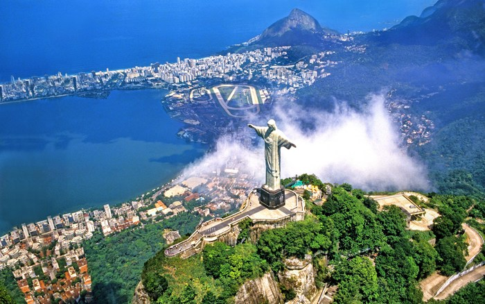
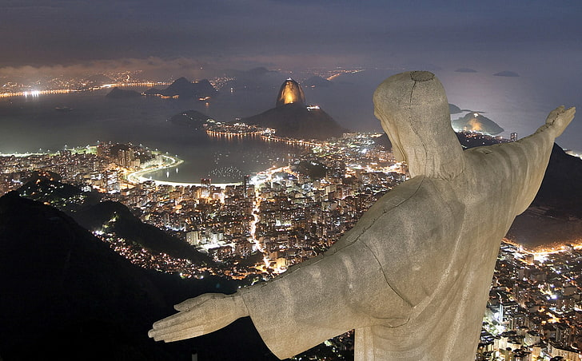
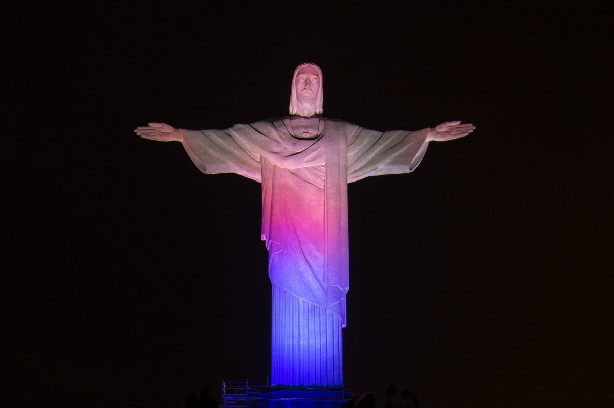
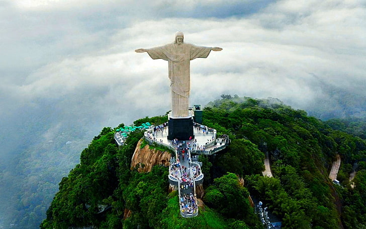

|Christ the Redeemer
|Christ the Redeemer
Vincentian priest Pedro Maria Boss first suggested placing a Christian monument on Mount Corcovado in the mid-1850s to honor Princess Isabel, regent of Brazil and the daughter of Emperor Pedro II, but the project was not approved.In 1889 the country became a republic, and owing to the separation of church and state the proposed statue was dismissed. The Catholic Circle of Rio made a second proposal for a landmark statue on the mountain in 1920.The group organized an event called Semana do Monumento ("Monument Week") to attract donations and collect signatures to support the building of the statue. The organization was motivated by what they perceived as "Godlessness" in the society. The donations came mostly from Brazilian Catholics.The designs considered for the "Statue of the Christ" included a representation of the Christian cross, a statue of Jesus with a globe in his hands, and a pedestal symbolizing the world.The statue of Christ the Redeemer with open arms, a symbol of peace, was chosen. Local engineer Heitor da Silva Costa and artist Carlos Oswald designed the statue. French sculptor Paul Landowski created the work. In 1922, Landowski commissioned fellow Parisian Romanian sculptor Gheorghe Leonida, who studied sculpture at the Fine Arts Conservatory in Bucharest and in Italy. A group of engineers and technicians studied Landowski's submissions and felt building the structure of reinforced concrete (designed by Albert Caquot) instead of steel was more suitable for the cross-shaped statue. The concrete making up the base was supplied from Limhamn, Sweden. The outer layers are soapstone, chosen for its enduring qualities and ease of use.Construction took nine years, from 1922 to 1931, and cost the equivalent of US$250,000 (equivalent to $3,600,000 in 2020) and the monument opened on October 12, 1931.During the opening ceremony, the statue was to be lit by a battery of floodlights turned on remotely by Italian shortwave radio inventor Guglielmo Marconi, stationed 9,200 kilometres (5,700 mi) away in Rome but because of bad weather, the lights were activated on site.
In 1990, several organizations, including the Archdiocese of Rio de Janeiro, media company Grupo Globo, oil company Shell do Brasil, environmental regulator IBAMA, National Institute of Historic and Artistic Heritage, and the city government of Rio de Janeiro entered into an agreement to conduct restoration work. More work on the statue and its environs was conducted in 2003 and early 2010. In 2003, a set of escalators, walkways, and elevators were installed to facilitate access to the platform surrounding the statue. The four-month restoration in 2010 focused on the statue itself. The statue's internal structure was renovated and its soapstone mosaic covering was restored by removing a crust of fungi and other microorganisms and repairing small cracks. The lightning rods located in the statue's head and arms were also repaired, and new lighting fixtures were installed at the foot of the statue. The restoration involved one hundred people and used more than 60,000 pieces of stone taken from the same quarry as the original statue. During the unveiling of the restored statue, it was illuminated with green-and-yellow lighting in support of the Brazil national football team playing in the 2010 FIFA World Cup. Maintenance work needs to be conducted periodically because of the strong winds and erosion to which the statue is exposed, as well as lightning strikes. The original pale stone is no longer available in sufficient quantity, and replacement stones are increasingly darker in hue
| Pictures | |
|---|---|
|  |  |
|  |  |
| Videos | |